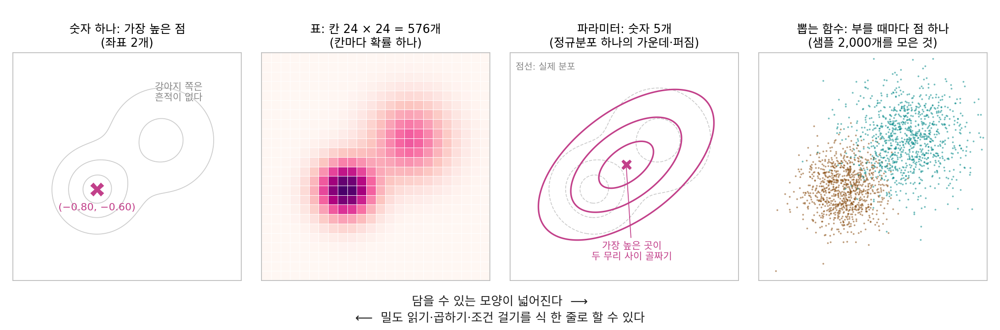
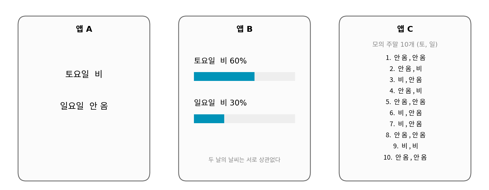
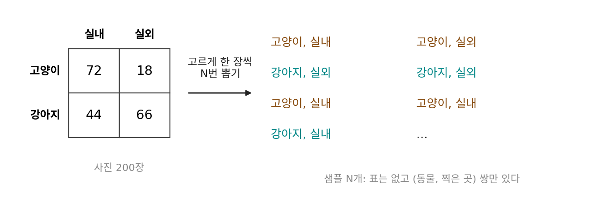
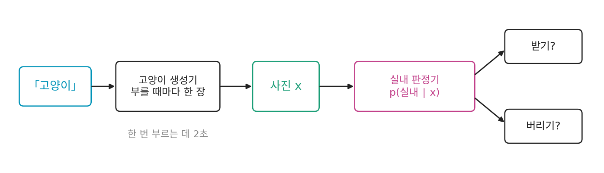

코드 속의 확률분포: 숫자 하나, 표, 파라미터, 뽑는 함수
이 장에서 p(a ∣ b)는 줄곧 종이 위의 표이거나 식이었다. 그런데 분류기나 생성기를 파이썬으로 짜 보면 p 라는 이름의 변수는 어디에도 없다. 분류기 코드의 끝에는 길이 10짜리 배열이나 정수 하나가 있고, 생성기 코드의 끝에는 그림 한 장이 있다. 수식에서는 둘 다 세로 막대가 들어간 p인데, 코드에서는 왜 이렇게 다른 모양으로 나타날까? 앞 절의 고양이 분포를 다른 함수에 넘겨주려 한다면, 변수 하나에 무엇을 넣어야 할까?
같은 분포를 네 가지로 담기
앞 절의 특징 평면에서 라벨을 지운 사진 분포를 담아 보자. 사진첩에 고양이와 강아지가 반반이면 p(x) = ½ p(x ∣ 고양이) + ½ p(x ∣ 강아지)이고, 라벨을 더해 지운 주변 분포다. 봉우리가 둘인 이 분포를 고른 것은 봉우리가 하나뿐이면 아래 네 가지 꼴의 차이가 잘 드러나지 않아서다. 코드로 담는 길은 크게 넷이다.
- 숫자 하나. 가장 높은 점 (−0.80, −0.60)만 남긴다. 분류기가 확률 대신 라벨 하나를 돌려주는
argmax가 이 꼴이다. 좌표 두 개면 되지만 가장 높은 점이 고양이 쪽에 있어서 강아지 봉우리는 흔적도 남지 않는다. 분포라기보다 점 하나다. - 표. 평면의 −3부터 3까지를 가로세로 폭 0.25인 칸으로 나눠 칸마다 확률을 하나씩 적는다. 24 × 24 = 576칸이다. 분류기의 소프트맥스 출력이 이 꼴이고, 분류기는 칸이 라벨 수만큼 있다. 칸이 촘촘하면 어떤 모양이든 담지만 칸 수는 축마다 곱해진다. 같은 폭을 32 × 32 컬러 사진의 3,072축에 쓰면 칸 수가 4,241자리 수가 된다.
- 파라미터 몇 개. 분포의 꼴을 정규분포로 미리 정해 두고, 가운데 좌표 두 숫자와 퍼짐을 적는 세 숫자(가로·세로 분산과 둘이 함께 움직이는 정도)만 적는다. 숫자 다섯 개를 정규분포의 밀도 식에 넣으면 평면 어디서든 밀도가 나온다. 대신 정해 둔 꼴 밖의 모양은 담지 못한다. 봉우리 둘에 정규분포 하나를 맞추면 가운데가 두 무리 사이 (0.05, 0.05)에 놓인다. 그 자리의 실제 높이는 0.091인데 정규분포 하나는 0.193으로 두 배 넘게 높게 보고, 고양이 무리의 가운데에서는 거꾸로 실제 0.265를 0.134로 낮춘다.
- 뽑는 함수. 밀도는 적어 두지 않고, 부를 때마다 점 하나를 돌려주는 함수만 둔다. 이런 함수를 샘플러 (분포에서 하나씩 뽑아 내놓는 함수 / sampler)라 한다. 여러 번 부르면 점들이 분포의 모양을 그린다. 어떤 모양이든 담을 수 있지만, 손에 남는 것은 점 더미뿐이다.

네 꼴을 코드로 적으면 아래와 같다. 뽑는 함수는 라벨을 반반으로 먼저 뽑고, 뽑힌 라벨의 정규분포에서 점을 뽑는다.
import numpy as np
rng = np.random.default_rng(4)
MU = {"고양이": np.array([-0.8, -0.6]), "강아지": np.array([0.9, 0.7])}
SD = {"고양이": 0.55, "강아지": 0.75}
def dens(x, k): # p(x | 라벨): 둥근 정규분포의 높이
d = x - MU[k]
return np.exp(-(d**2).sum(-1) / (2 * SD[k]**2)) / (2 * np.pi * SD[k]**2)
def p(x): # 라벨을 지운 p(x)
return 0.5 * dens(x, "고양이") + 0.5 * dens(x, "강아지")
best = np.array([-0.8, -0.6]) # (1) 숫자 하나: 가장 높은 점
w = 0.25 # (2) 표: 폭 0.25 인 칸 24 × 24
c = np.arange(-3, 3, w) + w / 2
grid = np.stack(np.meshgrid(c, c, indexing="ij"), -1)
table = p(grid) * w * w
table /= table.sum()
mean = np.array([0.05, 0.05]) # (3) 파라미터: 정규분포 하나의 숫자 5개
cov = np.array([[1.155, 0.552], [0.552, 0.855]])
def sample(n): # (4) 뽑는 함수: 라벨 먼저, 그다음 점
cat = rng.random(n) < 0.5
pts = np.where(cat[:, None],
MU["고양이"] + SD["고양이"] * rng.standard_normal((n, 2)),
MU["강아지"] + SD["강아지"] * rng.standard_normal((n, 2)))
return pts, cat
꼴마다 계산이 어떻게 바뀌나
이 장에서 한 계산은 넷이었다. 한 점의 확률(연속이면 밀도) 읽기, 조건부 분포에 조건의 확률을 곱해 결합 확률 만들기, 한쪽을 더해 지우기, 조건으로 좁혀 그 안에서 다시 재기. 꼴이 바뀌면 같은 계산이 아래처럼 다른 모양이 된다.
| 계산 | 표 | 정규분포 하나 | 뽑는 함수 |
|---|---|---|---|
| 한 점의 밀도 읽기 | 칸 하나 ÷ 칸 넓이 | 식에 넣는다 | 둘레 작은 네모에 든 샘플을 센다 |
| 곱해서 결합 만들기 p(x ∣ y) p(y) | 칸마다 곱한다 | 정규분포끼리 곱하면 다시 정규분포라 식이 있다 | y를 먼저 뽑고 그 y로 x를 뽑는다 |
| 더해 지우기(주변화) | 한 축을 따라 더한다 | 남길 축의 평균과 분산만 남긴다 | 지울 변수의 값을 보지 않는다 |
| 조건으로 좁히기 | 줄을 잘라 줄 합으로 나눈다 | 정해 둔 꼴 안에서 식이 있다 | 조건에 맞지 않는 샘플을 버리고 남은 것만 센다 |
뽑는 함수 꼴에서 곱하기와 더해 지우기는 표보다 오히려 쉽다. 결합 확률 p(x, y) = p(x ∣ y) p(y)를 칸마다 곱하는 대신, y를 먼저 뽑고 그 y로 x를 뽑으면 (x, y) 쌍이 결합 분포에서 뽑힌다. 주변 분포 p(x)는 그 쌍에서 y를 보지 않고 x만 쓰면 된다. 위 sample 함수가 한 일이 이것이다. 잠재 변수 z를 칸 17개로 나눠 적분하던 앞의 장난감도, 뽑는 함수 꼴에서는 z를 먼저 뽑고 x를 뽑은 뒤 z를 버리는 두 줄이 된다.
어려워지는 것은 조건으로 좁히기다. 1 × 1 네모 둘을 골라 「네모에 들 확률」과 「네모 안에서 고양이일 확률」을 표와 샘플 1만 개로 재 보자. 하나는 고양이 무리의 가운데를 덮는 네모이고, 다른 하나는 두 무리 사이 왼쪽 위의 드문 자리에 놓인 네모다.
def inbox(x, b): # 네모 b = (x 왼, x 오른, y 아래, y 위) 안인가
return (b[0] <= x[..., 0]) & (x[..., 0] < b[1]) & (b[2] <= x[..., 1]) & (x[..., 1] < b[3])
pts, cat = sample(10000)
for b in [(-1.25, -0.25, -1.0, 0.0), (-2.25, -1.25, 0.75, 1.75)]:
n = inbox(pts, b).sum()
print(f"표 {table[inbox(grid, b)].sum():.4f} 샘플 {inbox(pts, b).mean():.4f} ({n}개) "
f"네모 안 고양이 비율 {cat[inbox(pts, b)].mean():.3f}")
# 표 0.2074 샘플 0.2050 (2050개) 네모 안 고양이 비율 0.978
# 표 0.0011 샘플 0.0013 (13개) 네모 안 고양이 비율 0.462
촘촘한 칸으로 적분한 정답은 첫 네모가 0.2045와 0.976, 둘째 네모가 0.0011과 0.638이다. 샘플 꼴에서 조건으로 좁히기는 버리기다. 첫 네모에는 1만 개 가운데 2,050개가 남아 고양이 비율 0.978이 정답 0.976에 붙는다. 드문 네모에는 13개만 남고, 그 13개로 잰 고양이 비율 0.462는 정답 0.638에서 크게 벗어난다. 1만 개를 200번 새로 뽑아 보면 이 값이 0에서 1까지 오가는데, 조건이 드물수록 버리는 샘플이 늘어 남은 몇 개로 재기 때문이다. 표는 칸 폭을 정하면 값이 하나로 정해져서 뽑을 때마다 달라지지 않는다.
위젯에서 네모를 여기저기 옮기고 샘플 수를 바꿔 보면, 표의 값은 칸 폭만 정하면 그대로이고 샘플의 값은 「샘플 새로 뽑기」를 누를 때마다 흔들린다. 정규분포 하나로 보면 드문 네모의 확률을 0.0025로, 정답 0.0011의 두 배 넘게 잡는다. 라벨을 담지 않아서 네모 안 고양이 비율은 아예 내놓지 못한다. 칸 폭을 0.125로 줄이면 표는 더 정확해지지만 칸이 2,304개로 네 배가 된다.
정리하면 코드 속의 확률분포는 타협이다. 표로 적을 수 있을 때까지는 표로 버틴다. 칸이 너무 많아지면 꼴을 정해 숫자 몇 개로 줄이는데, 이때는 모양을 틀리게 담을 각오를 한다. 꼴도 정할 수 없으면 뽑는 함수로 넘어가고, 계산은 세기로 바뀌어 늘 조금씩 흔들린다.
ML에서: 분류기는 표, 그림 생성기는 뽑는 함수
분류기와 언어 모델은 표 꼴이다. 이미지넷 분류기는 라벨 1,000칸, 언어 모델은 다음 낱말 수만 칸짜리 표를 내놓는다. 칸 수가 감당할 만해서 표로 버틸 수 있다. 그림 생성기는 뽑는 함수 꼴이다. 부를 때마다 그림 한 장을 내놓고, 그 그림의 p(x)가 얼마인지는 알려 주지 않는 경우가 많다. 두 꼴이 섞인 모델도 많다. 정규분포에서 숫자 몇 개(잠재 변수 z)를 뽑아 신경망에 넣는 생성 모델은 잠재 변수 쪽을 파라미터 꼴로 담고, 그림 쪽은 신경망을 거친 뽑는 함수 꼴로 만든다. 위 sample 함수가 라벨을 먼저 뽑고 점을 뽑은 순서와 같다. 위 표에서 뽑는 함수 꼴이 가장 애먹는 칸은 조건으로 좁히기였는데, 이미 만든 생성기에 새 조건을 붙이면서 버리기보다 나은 방법을 찾는 것이 생성 모델의 큰 숙제다.
문제 13. 주말 날씨 앱 셋
같은 주말 예보를 세 앱이 다르게 보여 준다. 앱 A 는 날마다 낱말 하나(토요일 「비」, 일요일 「안 옴」), 앱 B 는 비 올 확률(토요일 60%, 일요일 30%), 앱 C 는 예보대로 돌린 모의 주말 10개를 보여 준다. 두 날의 날씨는 서로 상관없다고 하자. (가) 세 앱은 각각 네 꼴 가운데 어느 것인가? (나) 「이번 주말 이틀 가운데 하루라도 비가 올 확률」을 세 앱으로 각각 구하라. (다) 앱 C 로 구한 값이 앱 B 로 구한 값과 다르면 앱 C 가 틀린 것인가?


(가)는 앱 A 가 숫자 하나, 앱 B 가 표, 앱 C 가 뽑는 함수를 여러 번 부른 결과네.

(나)는 앱 B 부터 할게. 하루라도 비가 오는 건 이틀 다 안 오는 경우만 빼면 되니까 1 − 0.4 × 0.7 = 0.72.

앱 A 는 더 쉬워. 토요일이 「비」니까 하루라도 비 올 확률은 1이야.

토요일 「비」는 얼마나 확실한 말이었어요?

앱 B 를 보면 60%였어요. 아, 앱 A 는 60%를 「비」 하나로 줄여서 보여 준 거구나. 그럼 1이 아니에요. 「비」가 99%였는지 51%였는지 앱 A 만 봐서는 몰라서, 앱 A 로는 구할 수가 없어요.
앱 C 는 세면 돼. 열 개 가운데 하루라도 비가 온 주말이 2, 3, 4, 6, 7, 9번째, 여섯 개라 0.6.

0.6과 0.72가 다르네요. 앱 C 가 틀렸을까요?

열 개뿐이라 흔들린 것 같아요. 코드로 모의 주말을 10만 개 돌려 보면 0.7206이 나와요. 개수를 늘리면 앱 B 의 값에 다가가요.

그런데 앱 B 로 계산할 때는 두 날이 서로 상관없다는 말이 있어야 확률을 곱할 수 있었어. 앱 C 는 주말을 통째로 뽑아서 보여 주니까, 토요일에 비가 오면 일요일에도 잘 오는 식으로 두 날이 엮여 있어도 그냥 세기만 하면 되겠다. 대신 개수가 적으면 값이 흔들리고.
문제 14. 사진첩 표를 샘플로
사진첩 표(고양이 실내 72, 고양이 실외 18, 강아지 실내 44, 강아지 실외 66)에서 사진 한 장을 고르게 뽑는 일을 N번 되풀이해 (동물, 찍은 곳) 쌍 N개를 얻었다. 표는 버리고 쌍만 남았다. (가) 쌍만으로 p(실내 ∣ 고양이)를 구하는 절차는? (나) N = 100 과 N = 10,000 에서 코드로 구한 값을 표의 값 0.80 과 견주어라. 같은 N 으로 500번 새로 뽑으면 값이 얼마나 흩어지는가? (다) 앞의 병원 검사(유병률 1%, 환자의 90%에게 양성, 환자가 아닌 사람의 5%에게도 양성)를 1만 명의 샘플로 바꾸어 p(병 ∣ 양성)을 세면, 계산에 쓰이는 사람은 몇 명인가? 유병률이 1만 명에 1명이면 어떻게 되나?

(가)는 고양이가 아닌 쌍을 다 버리고, 남은 쌍 가운데 실내인 쌍의 비율을 세면 돼. (나)는 돌려 봤어. N = 100 이면 고양이 쌍이 40개, 그 가운데 실내가 34개라 0.850. N = 10,000 이면 고양이 쌍 4,517개 가운데 실내 3,622개라 0.802.
500번 새로 뽑아 보면 표준편차가 N = 100 에서 0.056, N = 10,000 에서 0.006이야. 샘플을 100배로 늘렸는데 흩어짐은 10분의 1로만 줄었네.
100배 늘렸는데 왜 10분의 1일까요?

음, 실내인지 아닌지를 n번 세서 낸 비율이니까… 분산이 p(1 − p)/n 이고, 표준편차는 √n 으로 나눠져요. 100배면 √100 = 10이라 10분의 1이요.
그런데 N = 100 이면 실제로 몇 개로 센 거야? 고양이 쌍만 남기니까 n 은 100이 아니잖아.
고양이가 90 ÷ 200 = 0.45라서 45개 안팎이네. √(0.8 × 0.2 / 45)가 0.06쯤이라 0.056과 맞아.

(다)는 1만 명이니까 1만 개로 재는 거고, 그럼 꽤 정확하겠지.
「양성일 때」 병일 확률을 세려면 1만 명 가운데 누구를 남겨야 해요?

아, 양성인 사람만 남겨야 해요. 그럼 585명 안팎만 남고 나머지 9,400명은 버려요. 500번 돌려 보니까 평균은 0.154로 정답이랑 같은데, 한 번 잴 때마다 0.107부터 0.199까지 오가요.
유병률이 1만 명에 1명이면 양성은 501명쯤 남는데, 그 가운데 환자는 기댓값이 0.9명이야. 답의 분자가 한 명도 안 되는 날이 많아. 조건으로 남긴 샘플이 많아도, 묻는 쪽이 드물면 셀 게 없네.

샘플로 센 값은 늘 흔들려요. 남는 샘플이 몇 개인지, 그 가운데 묻는 쪽이 몇 개인지를 같이 적어야 그 값을 얼마나 믿을지 알 수 있어요.
문제 15. 고양이 생성기에 「실내」 붙이기
「고양이」를 넣으면 부를 때마다 고양이 사진 한 장을 내놓는 생성기와, 사진 한 장을 받아 그 사진이 실내 사진인지 판정하는 판정기가 있다. 생성기는 한 번 부르는 데 2초가 걸린다. (가) 생성기 속을 고칠 수 없을 때 실내 고양이 사진을 얻는 가장 쉬운 방법은? (나) 생성기가 내놓는 고양이 사진의 80%가 실내라면, 실내 고양이 사진 100장을 얻는 데 평균 몇 번을 불러야 하는가? 「눈 덮인 산 위의 고양이」처럼 1만 장에 1장꼴인 조건이면? (다) 생성기 속을 고칠 수 있다면, 다 뽑은 뒤 버리는 대신 무엇을 바꾸고 싶은가?

(가)는 앞의 샘플 꼴 그대로야. 생성기를 계속 부르고, 판정기가 실내라고 한 사진만 남기면 돼.
(나)는 한 번에 실내가 나올 확률이 0.8이니까 100장에 평균 100 ÷ 0.8 = 125번. 250초면 끝나.

1만 장에 1장꼴이면 100 ÷ 0.0001 = 100만 번이네. 2초씩이면 200만 초니까… 23일이 넘어. 사진 100장을 얻자고 그래픽 카드를 한 달 가까이 돌려야 해.
그 100만 번 가운데 99만 9,900번은 무엇을 한 거예요?
다 그린 다음에 버렸어요. 실내가 아닌 산이나 바다 고양이를 끝까지 그려 놓고서요.
그럼 (다)는요? 생성기가 사진을 한 번에 그리지 않고 여러 단계에 걸쳐 조금씩 다듬는다고 해 봐요.
다 그린 다음에 판정하지 말고, 그리는 도중에 판정기한테 물어보면 어떨까요? 반쯤 그린 그림이 실내 쪽인지 바깥 쪽인지 보고, 실내 쪽으로 조금씩 틀면서 그리게요.
그러려면 판정기가 「맞다, 아니다」만 말하면 안 되겠다. 그림을 어느 쪽으로 고치면 실내다워지는지 방향까지 알려 줘야 하잖아.
찌개로 치면 다 끓인 다음 맛이 아니면 버리고 새로 끓이는 게 버리기고, 끓이는 동안 간을 보면서 소금을 더하는 게 서연이 말한 쪽이네. 간을 보려면 「싱겁다」만 아니라 무엇을 더 넣을지 알려 주는 혀가 있어야 하고.